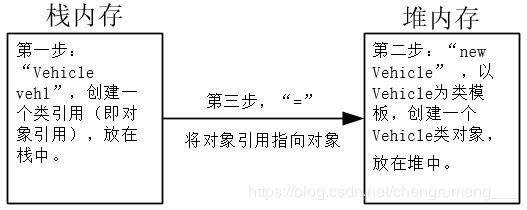

@TOC
第一篇博客发布，渴望做好 Java后端开发 ，希望大家可以多多指教！
人解决问题的复杂性取决于抽象的类型和质量。 （1）汇编语言 是对 底层机器 的轻微抽象。 （2）C 等语言是对 汇编语言 的抽象。 以上语言的所做的抽象在解决问题时，要基于计算机的结构（移植性不好，维护成本较高）。 （3）Java 是针对解问题建模，以虚拟机作为中间层，方便移植，跨平台性极好。
（1）万物皆为对象。 （2）程序是对象的集合，他们通过发送消息来告诉彼此想要做的。 （3）每个对象都有自己的由其他对象所构成的存储（所有的类都有同一个基类）。 （4）每个对象都有类。（每个对象都是某个类的一个实例） （5）某一特定类型的所有对象都可以接受同样的消息（例：后面一个"圆形"类型的对象能够接受所有发送给"几何型"对象的消息）
将对象看做服务，有助于提高对象的内聚性。（问题一般将过多的功能集中在一个对象中。）高内聚即将对象各个功能" 组合 "的很好。良好的面向对象的设计中，每个对象很好的完成一项任务，但不去做更多的事情。 （1）第一个对象提供支票排版的目录的服务 （2）第二个对象是通用的打印接口（打印服务） （3）第三个对象调用另外两个对象的服务完成最终的打印
（1）public后面的元素对任何对象都是可用的。 （2）private除类型创建者和类型的内部方法之外任何人都不能访问。 （3）protected与private的作用相当，差别在于继承的类可以访问protected成员，但是不能访问private成员。
类可以访问同一个包（库构件）中的其他类的成员，包之外这些成员相当于指定了private。
（1）组合：利用现有的类合成新类（如果组合是动态发生的，组合被称为聚合） 新类的成员对象常被声明为private，不干扰客户端代码的情况下，在运行时修改这些成员对象，来动态修改程序。 （2）继承：源类（基类、超类或父类）发生变动后，被修改的副本（导出类、继承类或子类） （例：几何形——圆形、正方形、三角形（每种都具有额外的特性和行为）） 思考--- 1°：导出类+新方法——基类需不需要此方法 2°：导出类可使用与基类同名的方法来覆盖基类中同名的方法（即使用相同的接口方法，在新类中做些不同的事情） 3°：前期绑定：非面向对象的编译器产生的函数调用会引起所谓的前期绑定，编译器产生一个具体函数名字的调用，而运行时将这个调用解析到被执行的代码的绝对地址。 4°：后期绑定：面向对象编程时，程序直到运行时才能确定代码的地址，故采用后期绑定。
编译器编译doSomething()的代码时，不确定doSomething()的确切类型。如果期望它的编译结果是调用基类Shape的erase()和draw()版本，而不是具体的Circle、Square或Line的相应版本。多态使得事情总是正确被处理。 1.定义：多态—不同类的对象对同一消息做出响应，同一消息根据对象的不同采用不同的行为方式。 2.实现方式：通过动态绑定实现多态，执行期间根据对象的实际类型，调用其相应的方法。 3.条件： （1）继承 （2）覆盖（方法重写） （3）父类引用指向子类对象
容器的基本理解：不知道解决某个特定问题需要多少个对象，或者他们将存活多久，就不知道如何存储这些对象，去找容器。被称为容器的新对象，在任何时候都可以扩充自己来容纳要置于其中的所有东西。因此不需要知道将来有多少对象置于容器中，只要自己创建一个容器对象，然后让它处理所有细节。
容器 存储Java中的通用类型：Object。单根继承结构意味着所有的东西都是Object类型，可以存储Object的容易可以存储任何东西，因而很容易被复用。使用这样的容器，在其内置入对象引用，稍后将其取回。 （1）将对象置入容器时，它必须被向上转型为Object，因此会丢失身份（向上转型：子类转向基类或称父类） （2）将它取出时，获取对Object对象的引用，不是置入时的那个类型的对象的引用。需要向下转型为置入时那个类型的对象的引用。（向下转型：父类或称基类转向子类）但是向下转型有很大的危险性，如果出现错误会引发异常。 通过参数化机制，编译器可以定制一个只收纳和取出Shape对象的容器，则能较为安全快捷的实现向上转型和向下转型。
一个处理器在同一时刻可以执行多个任务。即程序能够停下当前的工作，转而去处理某个其他问题，然后返回主进程。上述概念在java中成为并发，并发中有一个隐患：共享资源。多个并行任务都要访问同一资源，那么就会出问题。原因：以两个进程同时向一台打印机发送信息为例，一个进程执行中，另一个进程进来，前一个进程需要保护现场，相当于保护罪犯现场，别的人不能进来，因此会出现问题。解决这个问题，对访问共享资源的多个任务，有一个进程在访问共享资源时上锁，其他进程不能进来，访问结束后，释放资源锁，其他任务可以使用共享资源。
Java尽管将一切都看作对象，但操作的标识符实际上是对象的一个“引用”。可以想象成遥控器（引用）来操纵电视机（对象）。 （1）遥控器（引用）可以在房间的不同位置，仍能调控电视机（对象）。 （2）没有电视机，遥控器也可以独立存在。
(1) 寄存器。寄存器是最快的存储区，位于不同与其他存储区的地方—处理器内部。
(2) 堆栈。对象的引用放在堆栈中。
(3) 堆。Java的所有对象存放在堆中。
(4) 常量存储。常量值直接放在代码内部，在嵌入式系统中，常量会放在ROM中（只读存储器）。
(5) 非RAM存储。数据活在程序之外，完全不受程序的控制。两个基本的例子是流对象和持久化对象。
１°：流对象：对象转化成字节流，通常被发送给另一台机器。
２°：持久化对象：它被放在磁盘上，即便程序终止，他们仍可以保持自己的状态。这种技巧：对象可以转化为其他媒介上的事物，需要时可以恢复成常规的、基于RAM的对象。
一般使用new创建一个对象，将其放在堆里，但这种方法对创建特别小的、简单的变量往往不是很有效。而基本类型所具有的包装类，使得可以在堆中创建一个非基本对象，用来表示对应的基本类型。(无需使用new) （1）char c = ‘x’; （2）Character ch = new Character(‘x’); //这个有new （3）Character ch = ‘x’; //Java的自动包装功能可以自动将基本类型转为包装器类型。 char ch = new Character(‘x’);
new创建的对象在执行过程中可能一直存在，只是对象的引用可能会因超出作用域范围而不可用。好像遥控器在电视机的屋子里可以使用，但是拿到另一个屋子里面就不能控制电视机了，但是电视机仍然存在。
通常情况下，创建类时，就是在描述那个类的对象的外观和行为。除非用new创建那个类的对象，才能分配数据空间，方法才可以被调用。当时有两种情形是无法解决的。 （1）只想为某特定区域分配单一存储空间，不考虑要创建多少个对象，甚至不考虑创建对象。 （2）希望某个方法不与包含它的类的任何对象实例关联在一起。即没有创建对象，也可以通过类调用这个方法。 在此情形下诞生了static：
class StaticTest{
static int i=47;
}
//调用方法：
StaticTest.i++;
StaticTest st1 = new StaticTest();
StaticTest st2 = new StaticTest();
st1.i++;
st2.i++;
//在此情形下i的数值增加了3次，此时i==50.
class Incremental(){
static void increment(){
StaticTest.i++;
}
}
Incremental.increment();
Incremental sf = new Incremental();
sf.increment();
//在此情形下，i增加了两次。
希望有心人可以补充一下！！！！
http://greggordon.org/java/tij4/solutions.htm 链接来自网络，如有违权，联系后即刻删除！！！！！
eg：Vehicle veh1 = new Vehicle(); 这个语句的目的是创建一个对象，其实包含了四个动作。 （1）右面的 ”new Vehicle“ ,以Vehicle为模板，在堆里面创建了一个Vehicle类对象。 （2）末尾的“ () ”意味着，对象创建后，立即调用Vehicle类的构造函数，对刚生成的对象进行初始化。构造函数一定会存在，如果不存在，java默认生成一个构造函数。 （3）左边的“Vehicle veh1”是创建一个Vehicle类引用变量，放在栈里面，即以后用来指向Vehicle对象的对象引用 （4）“=”操作符，将对象引用指向创建的对象。

（1）基本类型直接存储在栈中 · 基本类型具有的包装容器，在堆中创建一个非基本对象，用来表示对应的基本类型 （2）基本类型与包装容器类对应如下 boolean Boolearn byte Byte short Short char Character int Int float Float long Long double Double (3)仅仅学习前两章节，涉及较少，后面回来补充！！！